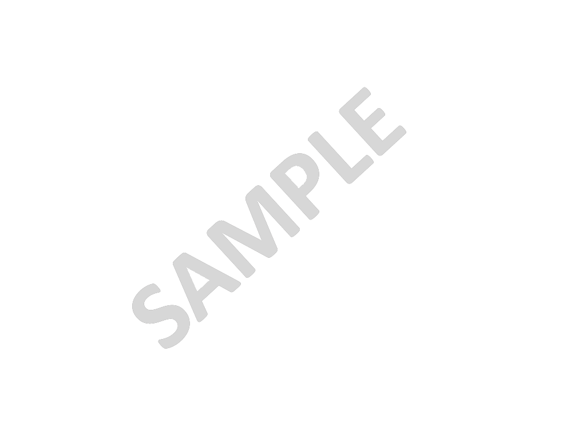

Personal Evaluation & Capability Assessment Tool
Copyrights
The Group is a modern, vibrant and dynamic organization that can respond quickly and effectively to the demanding and ever changing global market conditions. The basis on which the Group operates is flexible, clearly defined in its principles, with a client centric approach. One its main objectives is to provide comprehensive, specialized services to German speaking clients, as further elaborated in the section “Our ties with Germany”.
Besides the professional expertise inherently provided by the four main firms and founders of the Group, associate consulting firms offer specialised knowledge in all the sectors in which the Group operates, so that the overall services provided are integrated and complete. Quadrant Consulting Group provides services in architectural design, interior design, sustainable design, master and city planning, landscaping, structural engineering, mechanical and electrical engineering, traffic and transportation planning, marine and coastal engineering, hydraulic engineering, information engineering, geotechnical engineering, environmental arrangements, consulting, project management, and many other services. Additionally, with the aid of specialized partners, the Group is able to guide its clients through issues related to Greek legislation and law, such as the Development Act, Investment Law, Technical Law and licensing procedures. Services are also provided in issues relating to International Law and Contract Management.
The activity of Quadrant Consulting Group spreads across architectural and urban projects of all typologies and size, ranging from interior design, residential houses, buildings of special purpose and chains of commercial and business premises, to public buildings, works of programmed development and urban-scale complexes, as well as projects of a more technical nature. The Group has carried out many widely recognised domestic buildings and complexes, including projects of Olympic interest, such as the premises of the Olympic Aviation International Airport “Eleftherios Venizelos” and the Olympic Tennis Centre in Athens. Other large scale projects of public interest include the construction of the Marina of Flisvos, the restoration and re-use of listed hotel “Grande Albergo delle Rose” in Rhodes, the restoration and complete renovation of the listed building of the National Theater in Athens, the upgrading of facilities in the complex of the Patriarchal House in Istanbul, much of the Metro system in Athens and the entirety of the Metro system in Thessaloniki, as well as the premises of the Airport in New Anchialos. The four founding consulting firms have been honoured with several awards in competitions and, as such, many of their implemented projects stem from these awards.
Within its capabilities, Quadrant Consulting Group aspires to be an agent of change not only for its clients, the personnel and associates of the Group, but also for society in general, by constantly seeking through its work new creative ideas, innovative technological solutions and other comparative advantages which can provide added value in the field of construction. Considering sustainability to be a top value, the Group commits to contribute through its work to the sustainable development of the constructed environment, while staying true to its own governing principles from its inception until present. The Group maintains the vision, creativity and reliability necessary to support its clients in every step, big or small, they may take along the journey to realising their dreams, while providing modern and responsible solutions to meet even the most complex needs. One of the Group's main everyday concerns is the qualitative and quantitative improvement of its services in order to maintain high standards, consistency and speed of service, as well as customer support in whatever issue may arise after the completion of a project
